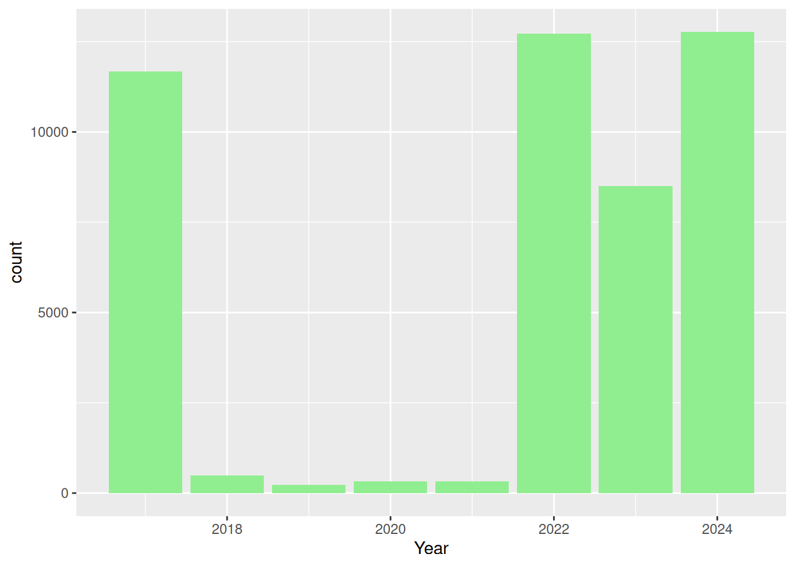

library(readr)
library(ggplot2)
data <- read_csv("data/shawnavoterdata.csv")
head(data)# A tibble: 6 × 9
Geo_Level Geo_Unit Voted Did_Not_Vote Not_Eligible_to_Vote Turnout Election
<chr> <chr> <dbl> <dbl> <dbl> <dbl> <chr>
1 Assembly Di… 23 3370 51962 18516 0.061 2024 Pr…
2 Assembly Di… 24 2354 48927 19199 0.046 2024 Pr…
3 Assembly Di… 25 2213 38974 19522 0.054 2024 Pr…
4 Assembly Di… 26 4412 48460 22243 0.083 2024 Pr…
5 Assembly Di… 27 2538 41938 18819 0.057 2024 Pr…
6 Assembly Di… 28 3994 48673 21475 0.076 2024 Pr…
# ℹ 2 more variables: Election_Date <chr>, Year <dbl>ggplot(data, aes(x = Year)) +
geom_bar(fill = "lightgreen")